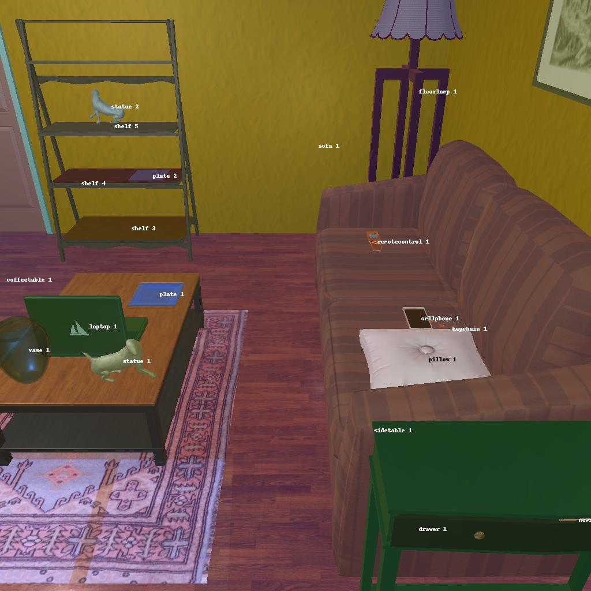
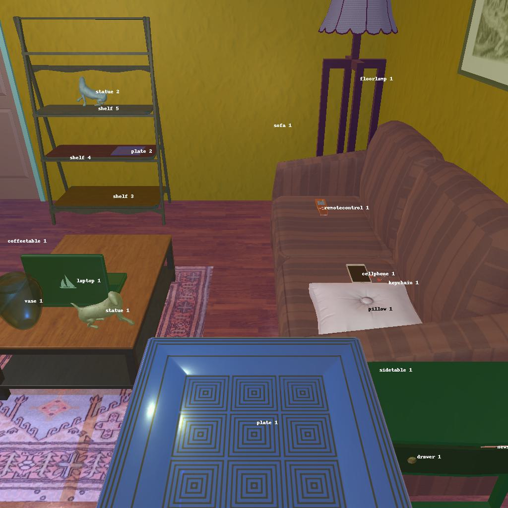
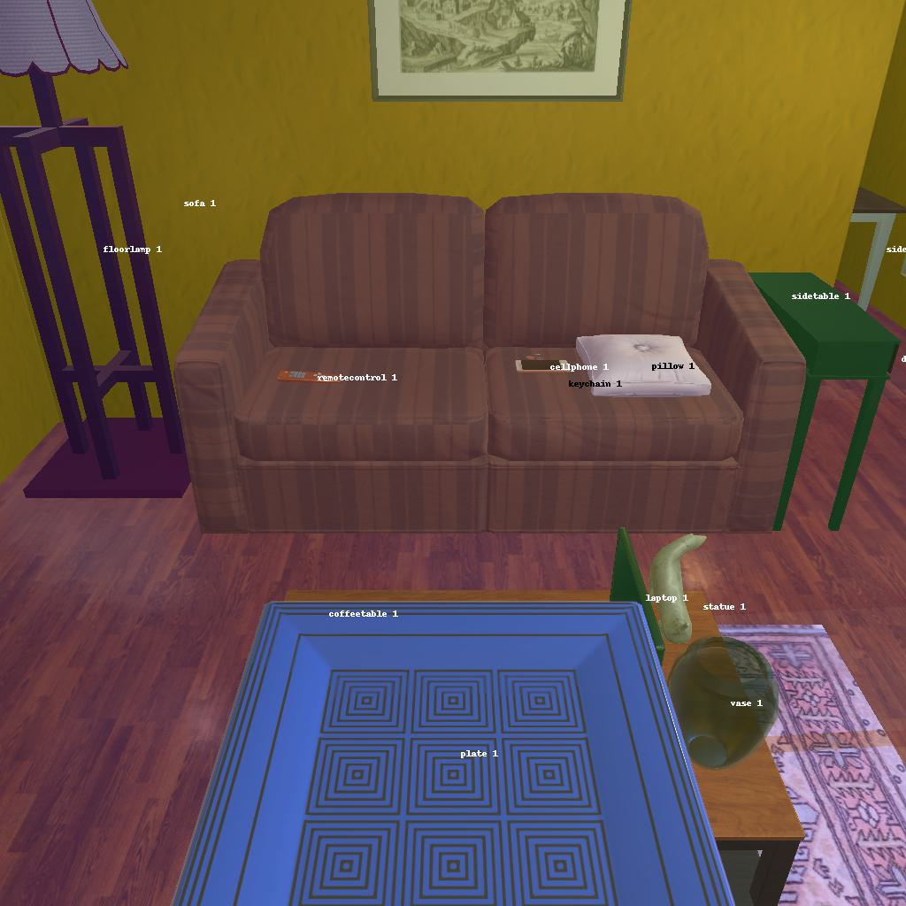

---------------------------------------------------------task: 3---------------------------------------------------------
--------------------------------------------------------------------------------------------------------------------------------------------------------------------
--------------------------------------------------------------------------------------------------------------------------------------------------------------------
Step:--------------------------------------------------------------------------6-------------------------------------------------------------------------------
----------------------------------------
VLM Prompt:
Image1:
Image2:
Image3:
**Instruction**
1. Analyze the provided image to identify all visible household objects, focusing on those relevant to the task description "look at plate under the floorlamp."
2. Use the analysis of the image and the task hint "The agent must find an object of the desired type, locate and turn on a light source with the desired object in-hand." to answer the question: what is the most reasonable action in the choices for the task description "look at plate under the floorlamp"?
4. Decide and write the answer using the template: The answer is: (i): , where i is the real number. If there is no desired object in the image, search every place based on **Initial Observation** to find the object. And if no one is exactly correct, choose a similar answer.
**Initial Observation**
You are in the middle of a room. Looking quickly around you, you can see armchair (1), garbagecan (1), tvstand (1), shelf (1-5), sofa (1), coffeetable (1), sidetable (1-2), drawer (1)
**Answer Choices**
(1): go to armchair 1
(2): go to garbagecan 1
(3): go to tvstand 1
(4): go to shelf 1
(5): go to shelf 2
(6): go to sofa 1
(7): go to sidetable 2
(8): go to drawer 1
(9): go to shelf 3
(10): go to shelf 4
(11): go to shelf 5
(12): put plate 1 in/on coffeetable 1
(13): use floorlamp 1
(14): examine plate 1
(15): examine coffeetable 1
**Answer**
Let's think step by step by following the instructions.
----------------------------------------
----------------------------------------
Original Response:
First, we need to identify all visible household objects that are relevant to the task description "look at plate under the floorlamp." Based on the images provided, we can see a plate on the shelf 5 under the floorlamp 1 in Image 1.
Now, using the analysis of the image and the task hint which indicates that the agent must find an object of the desired type (plate), locate and turn on a light source with the desired object in-hand, we can infer the most reasonable action.
The agent must first go to the location of the plate, which is on shelf 5, and then use the light source, which in this case is the floorlamp. Therefore, the agent needs to pick up the plate from shelf 5 and then turn on the floorlamp.
Based on the answer choices given, the most reasonable action would be to first go to shelf 5 to retrieve the plate.
The answer is: (11): go to shelf 5
----------------------------------------
----------------------------------------
>>> Refine Original VLM Response and Get Pure Action: go to shelf 5
----------------------------------------
-----------------------------------------------------------------
Running time: 9.044487237930298 seconds
Total Money: 1.3548400000000003
-----------------------------------------------------------------
-----------------------------------------------------------------
Text Observation:You arrive at loc 12. On the shelf 5, you see a statue 2.
-----------------------------------------------------------------
UNSUCCEED